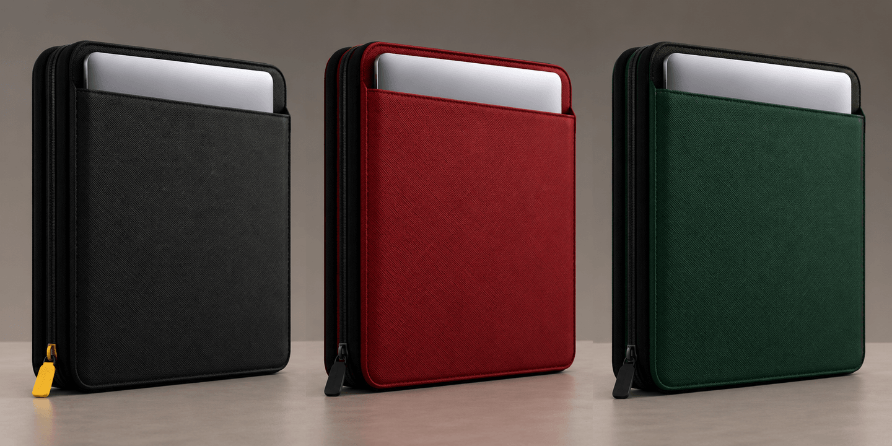

Yeni
BINDEX
Her şey, tek fermuarda.
Laptop, tablet, belgeler ve kablolar için tasarlanmış premium organizer. Saffiano dokulu deri, kusursuz düzen.

Laptop bir yerde, şarj aleti başka yerde, belgeler çantanın dibinde. BINDEX hepsini tek, zarif bir kılıfta topluyor.
360° tasarım
Her açıdan
kusursuz.
Çift yönlü fermuar
Üç kenardan
açılır.
4,4 cm
İnce profil.
Her çantaya sığar.
RENK · Gece Siyahı
ÇEKECEK · Sarı
Düzen
Her şeyin
yeri belli.
Altı ayrı bölme, her eşya için özel bir yer. Fermuarı aç, aradığın şey tam önünde.
- Laptop bölmesi
- Tablet cebi
- Belge cebi
- Kablo & kalem
Malzeme
Saffiano deri.
Zamansız.
Çizilmeye dayanıklı çapraz dokulu deri, el dikişli kenarlar. Yıllar geçtikçe daha da güzelleşir.
Koruma
Laptopun
güvende.
Yüksek yoğunluklu iç dolgu darbeleri emer, mikrofiber astar ekranı çizilmeye karşı korur. Çift yönlü fermuar her iki taraftan da kolayca açılır.
Detaylar
İnce profil.
Büyük kapasite.
- Laptop uyumu
- 16inç
- 13", 14" ve 16" laptoplara tam oturur.
- Bölme
- 6
- Laptop, tablet, belge, kablo, kalem ve kartlar için ayrı yerler.
- Ağırlık
- 780g
- Tüm gün taşıyabileceğin kadar hafif, yıllarca dayanacak kadar sağlam.
Renkler
Üç renk. Tek karakter.
Her biri aynı özenle, aynı deriden. Tek fark, senin tarzın.
Düzen, artık
taşınabilir.
₺3.499'dan başlayan fiyatlarla. Fuara özel ön sipariş fırsatıyla.